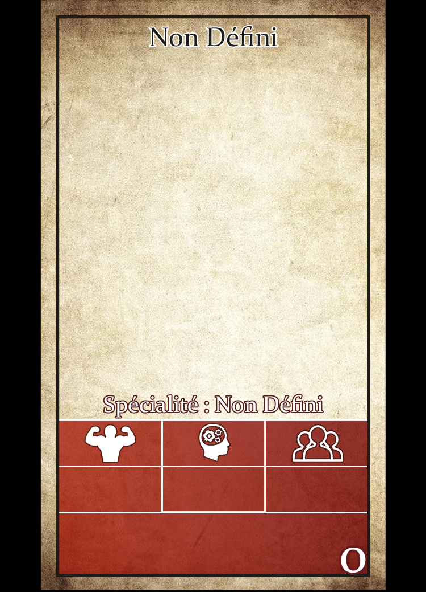

Bienvenue sur le site compagnon de Vagabonds , le jdr
Ce site est destiné aux maitres de jeu qui voudraient faire une partie de Vagabonds.
Bienvenue sur le site compagnon de Vagabonds , le jdr
Ce site est destiné aux maitres de jeu qui voudraient faire une partie de Vagabonds.
Voici ce que vous pouvez trouver sur ce site :
1 - Choix des archétypes
2 - Choisissez un personnage parmis ceux proposés
Le joueur répartit 5 points entre les 3 stats (Corps, esprit et social) présentes sur la fiche (entre 3 et 1)
Il choisit deux compétences ainsi qu'une spécialité.
Il commence avec une arme et une armure d'une classe égale ou inférieur à sa valeur de corps
Si jamais les joueurs manquent d'idées, vous pouvez lancez un D80 ou aller sur l'onglet "création de groupe" pour obtenir un personnage sur la table des archétypes., des cartes explicatives sont fournies en fin d'ouvrage.
| 2D6 | Rôle | But |
|---|---|---|
| 2 | La Purification | Votre dieu a abandonné vos terres, vous êtes là pour chasser le mal. |
| 3 | L'infiltré | Vous avez en votre possession des informations cruciales qui pourrait faire chuter l'organisation que vous avez infiltré. Attention : vos compagnons ne doivent pas en prendre connaissance de votre mission! |
| 4 | L'exil | Vous fuyez votre foyer désormais votre conception du monde est bouleversée. Attention : vous avez été exilé suite à un acte très grave ! |
| 5 | Le réfugié | Votre foyer est détruit, vous n'avez plus d'endroit où aller. Vous cherchez un endroit où vous établir. |
| 6 | Le protecteur | Vous parcourez le pays pour défendre les autres du mal. |
| 7 | Le voleur | Vous infiltrez les groupes de voyageurs pour leur dérober leurs biens avant de les laisser sur place. |
| 8 | Le marchand | Vous vendez des babioles et/ou signez des contrats commerciaux à travers le pays. |
| 9 | Le chasseur de prime | Vous traquez les criminels à travers le pays pour les vendre à la justice. Attention : cette activité est souvent mal vue, vous passez pour un opportuniste sans humanité. |
| 10 | Le cultiste | Dans le Sud,, vous avez été témoin de choses que l'esprit humain ne devrait jamais voir. Depuis vous vous êtes tourné vers de nouvelle divinités et vous cherchez des voyageurs à sacrifier pour ces dernières. Attention : de telles actions sont punies de mort. |
| 11 | La visite diplomatique | Vous souhaitez rendre visite à un seigneur pour le convier à une fête destinée à célébrer un évènement heureux. |
| 12 | Le proche malade | Une personne proche est gravement malade, vous devez lui apporter des médicaments. Vous aurez peut-être à voler pour les obtenir. |
Le joueur commence avec un stock de 3D6 qu'il utilise tout au long de la partie.
Lors des test on lance le nombre de dés égale à la valeur dans la compétence en question et le joueur choisi le dé qu'il préfère.
Un joueur ne peut utiliser que les dés présents dans son stock.
| Difficulté du test | Résultats attendus |
|---|---|
| Très Dur | 6 |
| Assez Dur | 5+ |
| Moyen | 4+ |
| Facile | 3+ |
La spécialité du personnage lui permet de baisser d'un cran la difficulté des test à faire dans ce domaine.
Lorsqu'un joueur subit une altération d'état, il place un dé de son stock sur la case correspondante, ce dé n'est plus utilisable tant que l'état n'est pas soigné.
Les joueurs ne peuvent pas faire de réussite critiques, cependant ils peuvent faire des échecs critiques (le résultat final d'un test est égal à 1) ce qui est souvent synonyme de mort pour le personnage.
Lorsqu'un personnage n'as plus dés dans son stock, il meurt.
Lorsqu'un personnage subit une blessure alors qu'il est affecté par un état gris, il meurt.
Lorsqu'un personnage est affecté par un état noir, il meurt.
Certains échecs critiques ne sont pas létaux, cependant il peuvent entraîner un handicap immédiat et ponctuel, on appelle ça un désavantage.
Désavantage : le meneur as un D6 qui peut utiliser lors d'un test. Lorsque le joueur a choisi le dé final de son test, le meneur peut lancer le D6 de désavantage et choisir un nouveau dé final entre son résultat et celui du joueur.
Dans d'autres cas, le handicap peut être plus long et très lourd. cet handicap peut être causé par une très grave maladie ou une ivresse avancé.
Dans ce cas on peut annoncer que tous les résultats du joueur impairs sont des échecs automatiques. On peut faire la même chose pour les résultats pairs mais ce dernier cas est beaucoup plus grave , 1 étant déjà impair les dés ont 2 chances sur 3 de faire un echec critique.
Bien sur il est possible de faire l'inverse pour aider les joueurs mais cela rentre moins bien dans l'optique de ce jeu, tout dépends des joueurs que vous avez à votre table.
Lorsqu'un joueur est affecté par un état, ce dernier dispose un D6 de sa réserve dessus, cependant il doit mettre le chiffre 1 bien visible et ainsi faire augmenter le nombre chaque jours. De cette manière, tout le monde peut connaître l'avancement de son état.
Si un personnage commence avec une altération d'état:
Lorsque deux personnages se battent, chacun met de côté un nombre de dés de stock égal au poid de son arme puis fait son test. En suite il ajoute. à son résultat un nombre de points égal à la somme de sa classe d'arme et de sa classe d'armure. On compare les résultat : celui ayant fait le plus haut score gagne et le perdant prends une blessures par points d'écart. En cas d'égalité, les deux personnages prennent une blessure.
Mars de l'année 1307, un hiver particulièrement rude vient de se terminer.
La plupart du pays, affamé, a dû envoyer ses réserves de nourriture de l'autre côté de la mer, d'où l'armée régulière qui a porté une croisade, revient perdante.
Le printemps tant attendu n'offre de que de maigres récoltes, il est terne et froid.
Des villages sont mis à sac un peu partout contraignants les populations locales à fuir leur maison.
Le shogunat s'est replié sur lui-même, affaiblit par les nombreuses révoltes de villageois affamés qui ont achevé les dernières poches d'autorités en dehors de la capitale. Ainsi le shogunat, paranoïaque, garde ses dernières forces pour verrouiller sa place forte.
Les conditions de vie précaires ont provoqué des épidémies aux quatres coins du pays.
Voici les clans exitants :
le clan Shinrai s'est formé suite à la volonté des natifs qui souhaitent reprendre le pouvoir aux colons via les instances politiques.
les premiers colons qui sont arrivés en Radie ont pris le pouvoir et leurs descendants sont les actuels souverains. Cet état de fait à poussé le clan Shinrai à se retrancher sur l'île d'Argençier. Ils n'ont pas pu reprendre le pouvoir à cette époque, depuis ils cohabitent tout en entretenant des relations plus ou moins tendues.
| A | Adélaïde, Armande, Adeline, Aélis ,Aénor ,Adelinde, Adèle, Alix, Auriane Aëlys, Alaïs, Aldherande , Aénor, Aliénor, Alinéor, Anastasie ,Astrid, Aude, Auriane, Aurore , Athénaïs, Amburgis, Archipiade, Arnégonde, Arégonde, Arnould, Anne, Agnès, Ana, Anna, Anglitorian, Accolon, Agravain, Avallach | Armand, Adalbert, Adelphe, Adémar , Auguste, Aimeric, Aloïs, Alos, Alosus, Amalric, Amaury, Ambroise, Arnaud, Arthur, Aymeric Albert, Antor |
|---|---|---|
| B | Berthe, Bertille, Blanche, Brunehaut , Basine, Brunehilde, Béatrice, Bérangère, Blanche, Brisaine | Baldric, Barthélemy, Baudoin , Balin, Balan, Bohort, Bertrand, Bohémond , Barthélémy, Ban, Bohort, Basin |
| C | Clémence, Clotilde, Clothilde, Cécile, Colombe, Constance, Cunégonde, Cyrielle, Constance, Clémence, Charlotte, Cécile, Claudine | Cadfael, Cadwal, Caradec, Charles , Caradoc Clotaire, Clovis, Chrétien, Cédric, Conrad, Clément, Colgrin, Claudas, Claudin, Calogrenant |
| D | Dorothée, Dandrane, Déotéria, Désirée | Do |
| E | Edith, Eléonore, Elodie, Eponine, Elaine, Enide, Ellan, Esclarmonde, Eudeline, Eulalie, Euphrasie, Eléonore, Esclarmonde, Edwige, Elisabeth | Eloi, Enguerrand, Estève , Elphin, Eudes, Evrard, Enguerrand, Erec, Eudes |
| F | Flore, Flora, Frénégonde, Finette | Féréol, Fernand, Flavien, Foulques, Florimond, François, Florent, Fleury |
| G | Gersande, Guenièvre, Gwendoline, Girflet, Gareth, Gaheris | Gaultier, Galaad, Gauthier , Galahad, Gaheris, Gauderic, Gaspard, Gauvin, Gérald, Godhroy ,Godefroy ,Grégoire, Guillaume,, Gilles, Ganelon, Guillaume, Gorlois |
| H | Héloïse, Hermine, Hildegarde, Henriette, Hermance | Harald, Hugues, Henri, Hoel |
| I | Iseult, Isabeau, Isabelle, Isaure, Isolde, Ingeberge | - |
| J | Jeanne,Jehanne, Justine, Jacqueline | Jacques, Jean, Jehan, Josserand, John, Justin |
| K | - | Kay |
| L | Laudine, Ludivine ,Louise | Lambert, Lancelot, Lucas, Louis, Lot, Loth, Léodagan |
| N | - | Norbert |
| M | Marie, Melissande,Morgane,Mathilde, Mahaut, Mélusine, Mabelle, Mahaut ,Mathilde, Mélissande,Mélissandre,Mélisende, Mélusine,Morgane, Marguerite, Marcova, Morgane, Morgause | Merlin, Morfydd, Martin, Mordred, Morgred, Melehant |
| O | Odeline,Ombeline | Othon |
| P | Pétronille | Perceval, Pierrick, Pierre, Philippe, Pelles |
| Q | - | Quentin |
| R | Radegonde, Rosemonde, Regina, Rolande, Rowena, Raymonde | Robin, Robert, Ruffin, Rowena, Richard,,j Raymond |
| T | Tiphaine, Thaïs | Tanguy, Thibaut, Taliesin, Tancrède ,Thibault,Tristan, Tiburce |
| U | - | Uther, Urien |
| V | Vivien, Viviane | - |
| W | Wisigarde | - |
| X | - | - |
| Y | Yseult, Ygraine | Yvain, Yves |
| Z | - | - |
Personnages séléctionnés